23.3. 使用AWS EC2 实例¶
在本节中，我们将向你展示如何在一台全新的Linux 机器上安装所有库。回想一下，我们在 23.2节 中讨论了如何使用Amazon SageMaker，而在AWS 上自行搭建实例的花费更低。本演练包括三个步骤：
从AWS EC2 申请一个GPU Linux 实例。
安装CUDA，或使用预装了CUDA 的亚马逊机器镜像（Amazon Machine Image）。
安装深度学习框架以及其他运行本书代码所需的库。
这一过程也适用于其他实例（以及其他云平台），只是需要做一些小的修改。在继续之前，你需要创建一个AWS 账号，更多细节请参阅 23.2节。
23.3.1. 创建并运行EC2 实例¶
登录AWS 账号后，点击“EC2”（图23.3.1）进入EC2 面板。

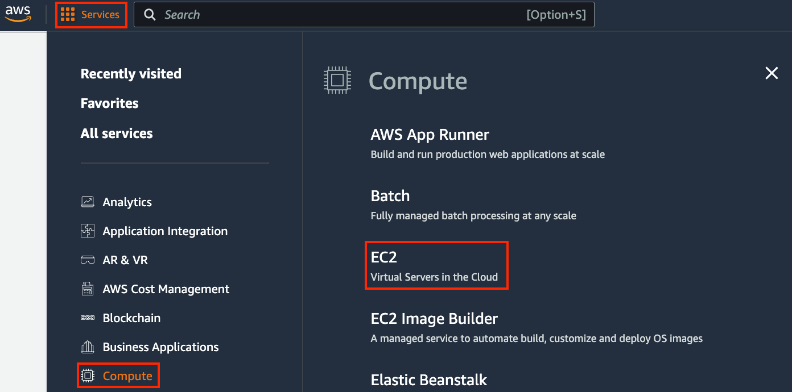
图23.3.1 打开EC2 控制台。¶
图23.3.2 展示了EC2 面板。

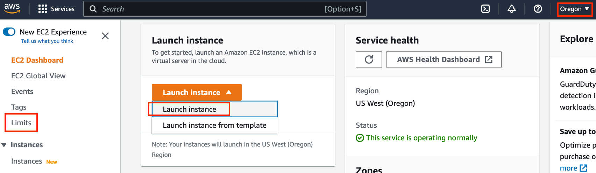
图23.3.2 EC2 面板。¶
23.3.1.1. 预设位置¶
选择一个附近的数据中心以降低延迟，例如“Oregon”（在 图23.3.2 的右上角用红框标出）。如果你位于中国， 可以选择附近的亚太区域，例如首尔或东京。请注意， 某些数据中心可能没有GPU 实例。
23.3.1.2. 提高限额¶
在选择实例之前，先点击左侧栏中的“Limits”标签（如 图23.3.2 所示），检查是否存在数量限制。 图23.3.3 展示了这类限制的一个示例。 该账号目前无法在对应区域开通“p2.xlarge”实例。如果你 需要开通一个或多个实例，请点击“Request limit increase”链接 申请更高的实例配额。 通常，处理申请需要一个工作日。

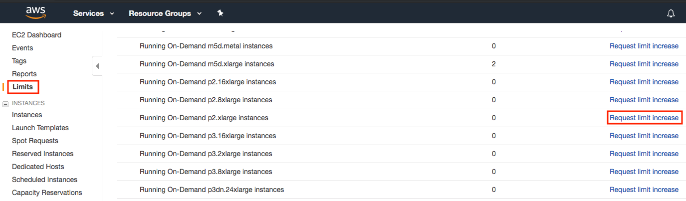
图23.3.3 实例数量限制。¶
23.3.1.3. 启动实例¶
接下来，点击 图23.3.2 中红框标注的“Launch Instance”按钮来启动实例。
首先，我们选择一个合适的亚马逊机器镜像（AMI）。选择Ubuntu 实例（图23.3.4）。

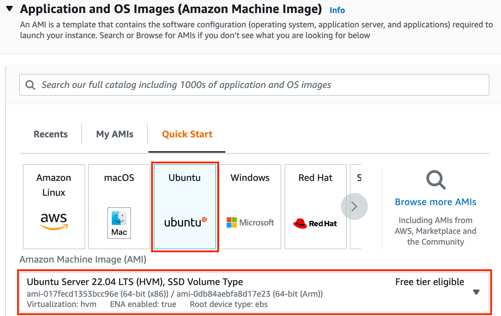
图23.3.4 选择AMI。¶
EC2
提供许多不同的实例配置可供选择。对初学者来说，这有时会让人感到不知所措。tab_ec2
列出了几种合适的机器。
:不同的EC2 实例类型
名称 |
GPU |
说明 |
|---|---|---|
g2 |
Grid K520 |
老旧 |
p2 |
Kepler K80 |
较旧，但作为竞价实例通常很便宜 |
g3 |
Maxwell M60 |
性价比良好 |
p3 |
Volta V100 |
FP16 性能高 |
p4 |
Ampere A100 |
针对大规模训练的高性能 |
g4 |
Turing T4 |
针对FP16/INT8 推理优化 |
所有这些服务器都有多种规格，用于表示所使用的GPU 数量。例如，p2.xlarge 有1 块GPU，而p2.16xlarge 有16 块GPU 和更大的内存。更多细节请参阅AWS EC2 文档或汇总页面。为了演示，一台p2.xlarge 就足够了（在 图23.3.5 的红框中标出）。

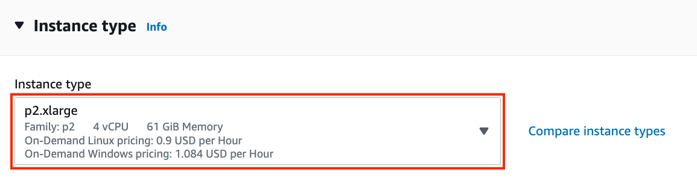
图23.3.5 选择实例。¶
请注意，你应当使用带有合适驱动程序的GPU 实例，以及支持GPU 的深度学习框架。否则，使用GPU 不会带来任何好处。
接下来，我们选择用于访问 实例的密钥对。如果没有密钥对，请点击 图23.3.6 中的“Create new key pair”生成一个密钥对。随后， 你可以选择 之前生成的密钥对。 如果你生成了新的密钥对，请务必下载它并将其保存在安全的位置。这是你 通过SSH 登录服务器的唯一方式。

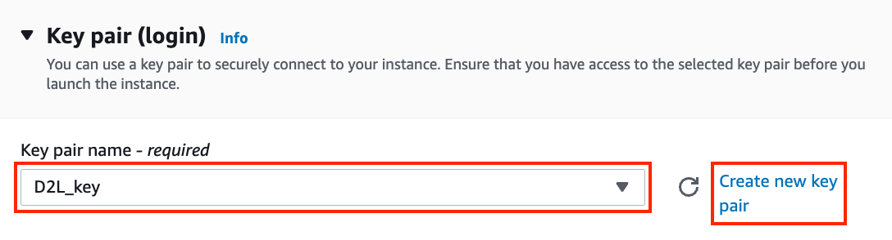
图23.3.6 选择密钥对。¶
在本例中，我们将保持“Network settings”的默认配置（点击“Edit”按钮可以配置子网和安全组等项目）。我们只是把默认硬盘大小增加到64 GB（图23.3.7）。请注意，仅CUDA 本身就会占用4 GB。

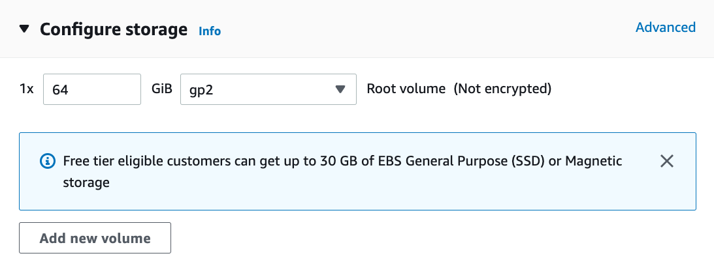
图23.3.7 修改硬盘大小。¶
点击“Launch Instance”启动已创建的 实例。点击 图23.3.8 中显示的实例ID，即可查看该实例的状态。

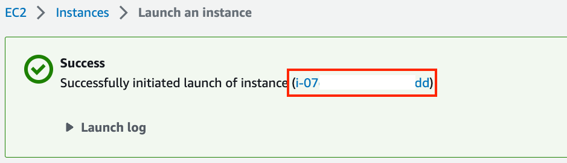
图23.3.8 点击实例ID。¶
23.3.1.4. 连接到实例¶
如 图23.3.9
所示，实例状态变为绿色后，右键点击该实例并选择Connect，即可查看实例的访问方式。

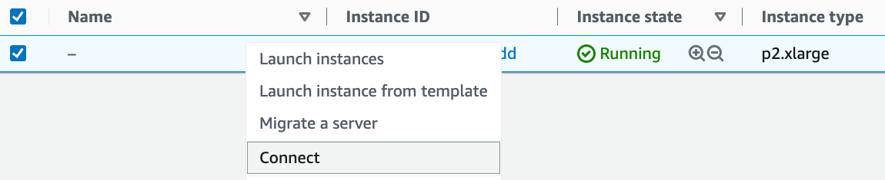
图23.3.9 查看实例访问方式。¶
如果这是新密钥，那么为了让SSH
正常工作，该密钥不能被公开查看。进入存放D2L_key.pem的文件夹，
并执行以下命令 使该密钥不可被公开查看：
chmod 400 D2L_key.pem

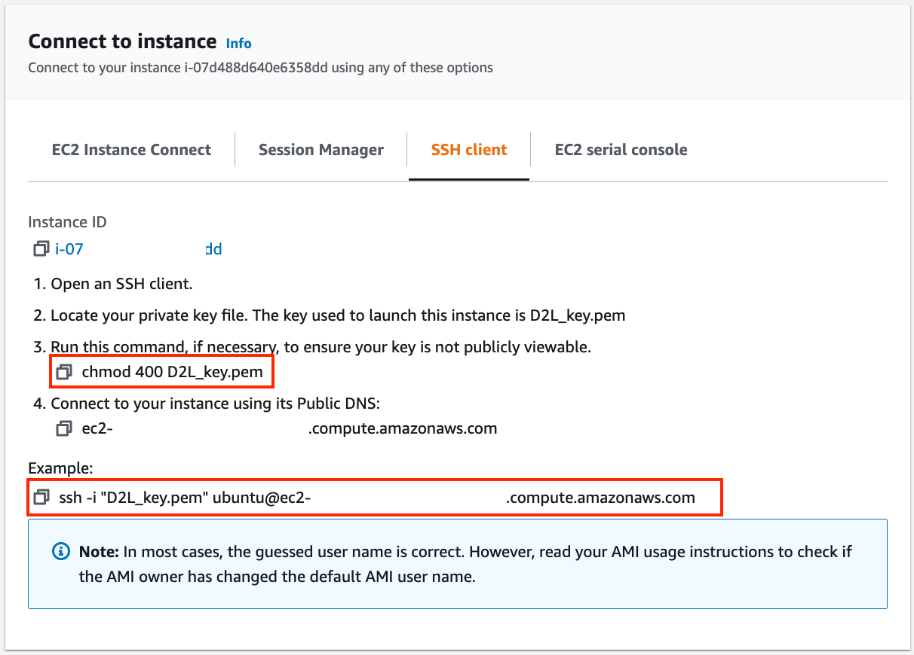
图23.3.10 查看实例访问和启动方式。¶
现在，复制 图23.3.10 下方红框中的SSH 命令，粘贴到命令行中：
ssh -i "D2L_key.pem" ubuntu@ec2-xx-xxx-xxx-xxx.y.compute.amazonaws.com
当命令行提示“Are you sure you want to continue connecting (yes/no)”时，输入“yes”并按回车键登录实例。
现在，你的服务器已经准备就绪。
23.3.2. 安装CUDA¶
在安装CUDA 之前，请务必使用最新的驱动程序更新实例。
sudo apt-get update && sudo apt-get install -y build-essential git libgfortran3
这里我们下载CUDA 12.1。访问NVIDIA 的官方仓库，找到下载链接，如 图23.3.11 所示。

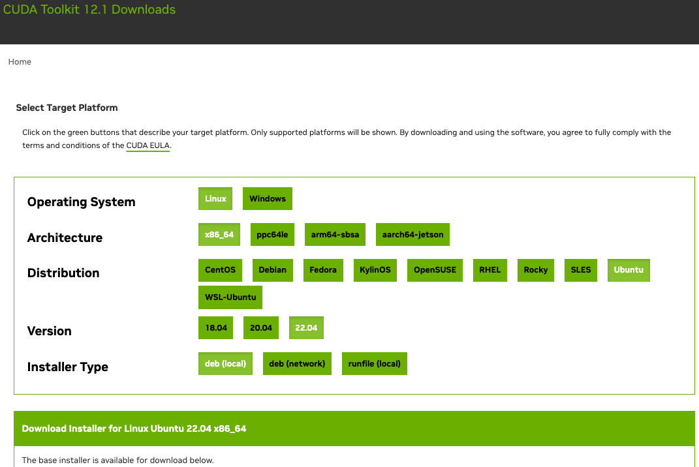
图23.3.11 查找CUDA 12.1 的下载地址。¶
复制这些安装指令，粘贴到终端中，即可安装CUDA 12.1。
# The link and file name are subject to changes
wget https://developer.download.nvidia.com/compute/cuda/repos/ubuntu2204/x86_64/cuda-ubuntu2204.pin
sudo mv cuda-ubuntu2204.pin /etc/apt/preferences.d/cuda-repository-pin-600
wget https://developer.download.nvidia.com/compute/cuda/12.1.0/local_installers/cuda-repo-ubuntu2204-12-1-local_12.1.0-530.30.02-1_amd64.deb
sudo dpkg -i cuda-repo-ubuntu2204-12-1-local_12.1.0-530.30.02-1_amd64.deb
sudo cp /var/cuda-repo-ubuntu2204-12-1-local/cuda-*-keyring.gpg /usr/share/keyrings/
sudo apt-get update
sudo apt-get -y install cuda
安装完成后，运行以下命令查看GPU：
nvidia-smi
最后，将CUDA
添加到库路径中，以便其他库能够找到它，例如在~/.bashrc末尾追加以下几行。
export PATH="/usr/local/cuda-12.1/bin:$PATH"
export LD_LIBRARY_PATH=${LD_LIBRARY_PATH}:/usr/local/cuda-12.1/lib64
23.3.3. 安装运行代码所需的库¶
要在EC2 实例上运行本书的代码， 只需按照 安装 中面向Linux 用户的步骤操作， 并遵循以下在远程Linux 服务器上工作的提示：
要下载Miniconda 安装页面上的bash 脚本，请右键点击下载链接并选择“Copy Link Address”，然后执行
wget [copied link address]。运行
~/miniconda3/bin/conda init之后，你可以执行source ~/.bashrc，而不必关闭并重新打开当前 shell。
23.3.4. 远程运行Jupyter 笔记本¶
要远程运行Jupyter 笔记本，你需要使用SSH 端口转发。毕竟，云端的服务器没有显示器和键盘。为此，请从你的台式机（或笔记本计算机）按如下方式登录服务器：
# This command must be run in the local command line
ssh -i "/path/to/key.pem" ubuntu@ec2-xx-xxx-xxx-xxx.y.compute.amazonaws.com -L 8889:localhost:8888
接下来，在EC2 实例上进入 已下载的本书代码 所在位置， 然后运行：
conda activate d2l
jupyter notebook
图23.3.12 展示了运行Jupyter 笔记本后可能得到的输出。最后一行是端口8888 的URL。

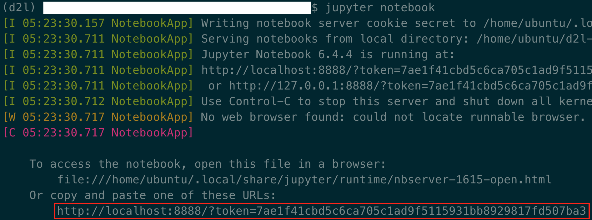
图23.3.12 运行Jupyter 笔记本后的输出。最后一行是端口8888 的URL。¶
由于你使用端口转发把端口映射到了8889， 请复制 图23.3.12 红框中的最后一行， 将URL 中的“8888”替换为“8889”， 然后在本地浏览器中打开它。
23.3.5. 关闭未使用的实例¶
由于云服务按使用时间计费，你应当关闭未使用的实例。注意，这里有几种不同的做法：
“停止”（Stopping）实例意味着你之后还能重新启动它。这类似于关闭普通服务器的电源。不过，停止的实例仍会因其保留的硬盘空间而被收取少量费用。
“终止”（Terminating）实例会删除与该实例关联的所有数据。这包括磁盘，因此你无法再次启动它。只有在你确定将来不再需要该实例时才这样做。
如果你想把这个实例用作创建更多实例的模板， 请右键点击 图23.3.9 中的示例并选择“Image”\(\rightarrow\) “Create”，为该实例创建镜像。完成后，选择 “Instance State”\(\rightarrow\)“Terminate”来终止该实例。下次 你想使用这个实例时，可以按照本节的步骤 基于保存的镜像 创建一个实例。唯一的区别在于，在 图23.3.4 显示的“1. Choose AMI”中，你必须使用左侧的“My AMIs”选项来选择 已保存的镜像。创建的实例将保留存储在镜像硬盘 上的信息。例如，你无需重新安装CUDA 和其他运行时 环境。
23.3.6. 小结¶
我们可以按需启动和停止实例，而不必购买并组装自己的计算机。
在使用支持GPU 的深度学习框架之前，我们需要安装CUDA。
我们可以使用端口转发在远程服务器上运行Jupyter 笔记本。
23.3.7. 练习¶
云服务提供了便利，但价格并不便宜。了解如何启动竞价实例，看看如何降低成本。
试用不同的GPU 服务器。它们有多快？
试用多GPU 服务器。你能把规模扩展得怎么样？